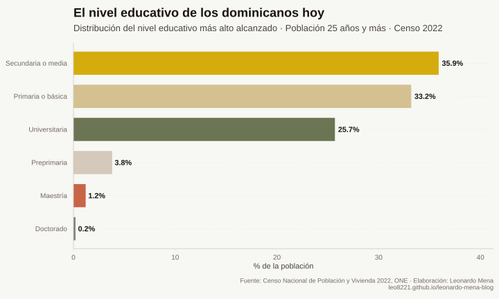
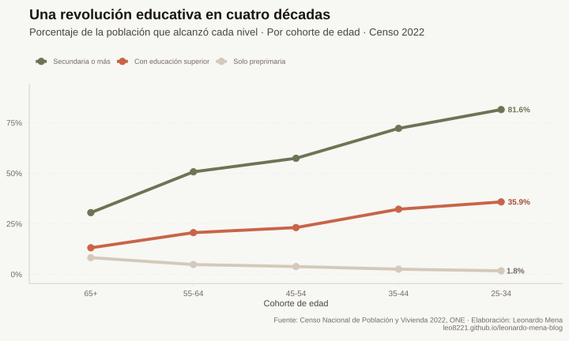
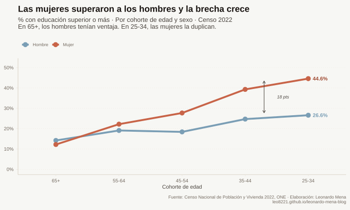
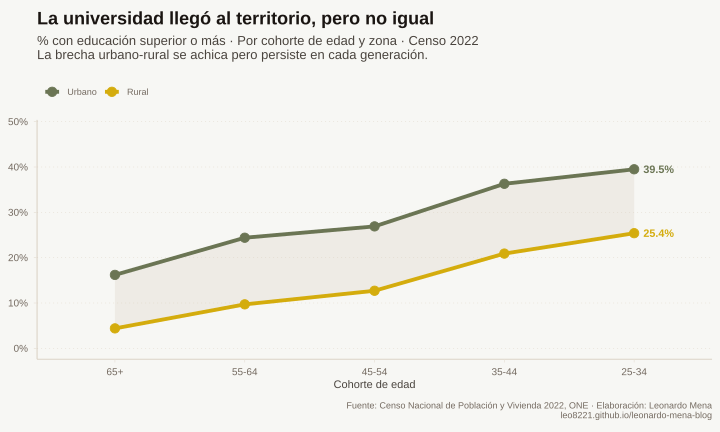
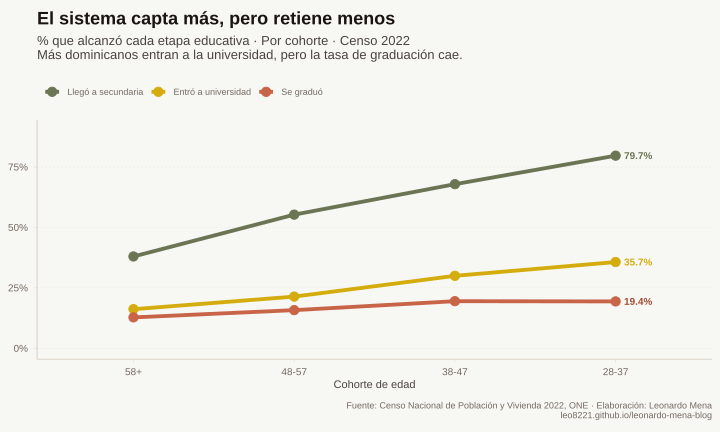
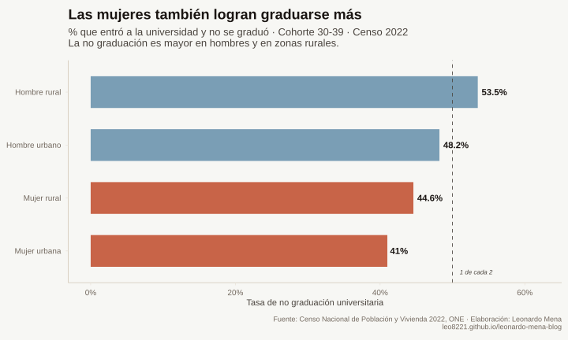
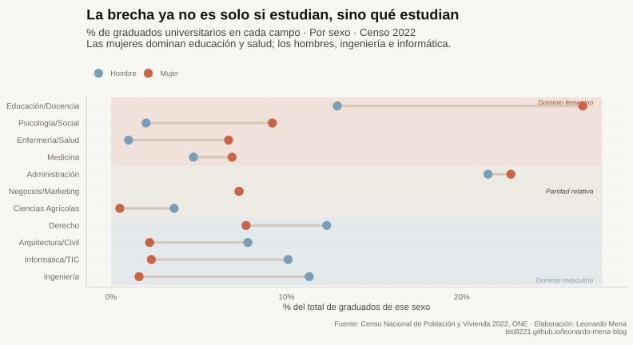

La revolución educativa dominicana: lo que el censo nos dice y lo que no
Educación
Censo 2022
Capital Humano
La República en un gráfico
En cuatro décadas, la República Dominicana transformó su sistema educativo. Más dominicanos estudian, las mujeres lideran el cambio, y la universidad ya no es un privilegio de pocos. Pero el sistema capta más de lo que retiene, y lo que estudian hombres y mujeres sigue siendo muy distinto.
Conclusiones Clave
- Una revolución silenciosa: En la generación de 65 años y más, menos de uno de cada tres llegó a la secundaria. En la de 25 a 34, más de ocho de cada diez. La transformación es real e innegable.
- Las mujeres lideran: En la cohorte más joven, las mujeres con educación superior casi duplican a los hombres: 44.6% frente a 26.6%. La inversión ocurrió en el lapso de dos generaciones.
- El campo avanza, pero no alcanza: La zona rural pasó de 4.4% a 25.4% de adultos con educación superior. La brecha con la ciudad persiste en casi 15 puntos.
- El sistema capta más de lo que retiene: La tasa de graduación universitaria cayó de 79% a 54% entre generaciones. Más de la mitad de quienes ingresan hoy no completan.
- La brecha ya no es solo si estudian, sino qué estudian: Mujeres en educación y salud, hombres en ingeniería y ciencias agrícolas. La distancia en algunos campos es pronunciada y merece análisis.
Los cambios profundos son difíciles de ver desde adentro. Cuando se vive el proceso, lo que se percibe son los problemas que faltan resolver, no la distancia recorrida. La educación dominicana no es la excepción: las quejas sobre su calidad son legítimas, pero corren el riesgo de opacar una transformación que, medida con datos, resulta notable.
Este artículo usa el Censo 2022 para documentar esa transformación. No para negar los desafíos, sino para ponerlos en perspectiva.
¿Dónde estamos parados?
Los datos del Censo 2022 muestran que la secundaria es hoy el nivel predominante entre los dominicanos: 35.9% de la población adulta llegó hasta ahí. Le sigue de cerca la primaria con 33.2%. Universitaria, maestría y doctorado juntos no llegan al 30%.
¿Es eso malo? Depende de desde dónde se mire. Una fotografía es estática, el proceso educativo no. Cualquier análisis que se quede en el número agregado pierde lo más importante: quién estudia hoy no es quien estudiaba hace cuarenta años, y esa diferencia lo cambia todo.
Una revolución en cuatro décadas

Hace sesenta años, Juan, abuelo de Pedro, oriundo de La Vega, dedicado a la siembra y al ganado de su padre, terminó la primaria con suerte. La secundaria no era una opción, era un lujo de otro mundo.
Hoy Pedro vive en una sociedad distinta. Que no termine la secundaria sería la excepción, no la regla.
Juan y Pedro son personajes, pero la sociedad dominicana está llena de ambos. Entre los dominicanos de 65 años y más, menos de uno de cada tres llegó a la secundaria. Entre los de 25 a 34, más de ocho de cada diez la completaron o fueron más allá. La universidad, que para la generación de Juan alcanzaba apenas al 13% de la población, hoy la cursa más de uno de cada tres jóvenes. Y “solo terminé la primaria” se convierte cada vez más en una frase del pasado.
Eso es una revolución, silenciosa, acumulada en décadas, pero revolución al fin.
La otra revolución: la mujer en educación
La revolución en magnitudes no viene sola. Sería un error no señalar el cambio cultural que la acompaña.
En la generación de Juan, los pocos afortunados que llegaban a la universidad eran mayoritariamente hombres. Hoy esa realidad está invertida y la brecha no para de crecer.

En la cohorte de 25 a 34 años, las mujeres con educación superior casi duplican a los hombres: 44.6% frente a 26.6%.
Que la mujer dominicana haya conquistado la universidad en el lapso de dos generaciones es, sin exageración, uno de los cambios sociales más profundos que registra el censo. Pero ese logro abre una pregunta incómoda: ¿qué pasó con el hombre?
¿Perdió fe en la educación? ¿Existen barreras económicas o culturales que lo empujan antes al mercado laboral? Los datos describen el patrón con claridad, explicarlo requiere un análisis más profundo que este artículo no pretende cerrar, pero sí dejar planteado.
El campo y la ciudad
La heterogeneidad del territorio dominicano obliga a mirar más allá del agregado nacional. ¿Llegó la revolución educativa al campo con la misma fuerza que a la ciudad?

Los datos son alentadores, pero incompletos. En la zona rural, la proporción de adultos mayores de 65 años con educación superior apenas alcanzaba el 4.4%. En la generación de 25 a 34, ese número llega al 25.4%, más de cinco veces superior. El avance es real e innegable.
Pero la brecha con el entorno urbano persiste. Mientras el campo joven llega al 25%, la ciudad joven está en 39.5%, casi 15 puntos de distancia. Dos generaciones de expansión educativa no han bastado para cerrarla.
Y aquí surge una pregunta que los datos no pueden responder solos: ¿cuánto de este avance rural es avance real, y cuánto es selección? Es posible que parte de los jóvenes rurales más motivados hayan migrado a la ciudad, inflando las cifras urbanas y desinflando las rurales. Sin datos de movilidad que lo confirmen, queda en conjetura, pero es una conjetura que vale la pena nombrar.
Captamos más, pero no retenemos
Los avances son reales, pero el sistema ha generado sus propios problemas en el camino.

En la generación más cercana a Juan, pocas personas llegaban a la universidad. Pero quienes llegaban, terminaban: la tasa de graduación superaba el 79%. El filtro estaba en la entrada, no en el proceso.
Hoy la lógica se invirtió. La cohorte de 28 a 37 años entra a la universidad a una tasa del 35.7%, más del doble que las generaciones anteriores. Pero solo el 19.4% se gradúa. Más de la mitad de quienes ingresan no completan.
Eso no es expansión del sistema, es expansión de la puerta de entrada sin fortalecer lo que hay adentro.
Sin datos desagregados por institución es difícil señalar causas, pero siendo la UASD el centro con mayor número de estudiantes del país, es razonable asumir que una parte importante no logra completar la carrera y que una parte de esa inversión pública se pierde en el camino. No como juicio moral a quienes abandonan, las razones pueden ser económicas, familiares o académicas, sino como llamado a entender un fenómeno que el censo hace visible y que la política educativa no puede ignorar.
El género no ayuda
Recordemos que los hombres ya llegaban en menor proporción a la universidad. En la no graduación, el problema se profundiza.

Uno de cada dos hombres que se inscribe en la universidad no llega a graduarse. Y el dato es casi idéntico entre hombres urbanos y rurales, lo que sugiere que la zona no es el factor determinante. Algo más sistemático está en juego.
Las mujeres logran graduarse más en todas las combinaciones posibles. No es una diferencia marginal, es un patrón consistente que refuerza la pregunta planteada antes sobre el hombre dominicano y su relación con la educación superior.
Trayectorias educativas divididas
Las personas desarrollamos gustos distintos, y la educación no escapa a eso. Pero cuando las diferencias son tan marcadas, vale preguntarse si son producto de preferencias genuinas o si el entorno las moldea antes de que el individuo llegue a elegir.

En el sistema educativo dominicano, las mujeres se concentran en educación y salud; los hombres, en ingeniería y ciencias agrícolas. Buscar paridad exacta en cada carrera sería un absurdo. Pero la distancia en algunos campos es tan pronunciada que la pregunta sobre qué factores producen preferencias tan uniformes no puede descartarse como anecdótica.
NOTA METODOLÓGICA
Aproximadamente 3 de cada 10 graduados no declararon su campo de estudio en el censo. El análisis excluye estas observaciones del denominador. Los campos presentados corresponden a los 11 de mayor volumen entre los titulados con carrera declarada.
Conclusión
Luego de recorrer los datos, es difícil sostener que estamos peor que hace cuarenta años. La evidencia apunta en la dirección contraria. Pero los avances conviven con problemas persistentes y con nuevos vicios generados por el propio proceso de expansión.
La educación sigue siendo, con todas sus imperfecciones, la principal puerta de salida de la pobreza para una parte importante de la población dominicana.
A título personal: no creo que el objetivo deba ser que todos terminen con un título universitario. Las rutas técnicas, digitales y de formación no convencional abren puertas a talentos que el sistema tradicional descartaba. Pero ya sea que apostemos por ese camino o por seguir ampliando el acceso a la educación superior, la tarea es la misma: eliminar las barreras que deciden por las personas antes de que ellas puedan decidir por sí mismas.
• • •
Fuentes de Datos & Referencias
ONE (2022)
"Censo Nacional de Población y Vivienda 2022". Fuente principal de todos los microdatos utilizados en este análisis. Variables p26 (sexo), p27 (edad), p43 (nivel educativo), p45 (campo ISCED-F), p46 (graduación) y zona.
Ver Censo 2022 ↗UNESCO-UIS (2022)
"ISCED Fields of Education and Training 2013 (ISCED-F 2013)". Clasificación internacional utilizada para agrupar los campos de estudio declarados en el censo (variable p45_code).
Ver clasificación ISCED-F ↗CEPAL (2022)
"La educación superior en América Latina y el Caribe". Contexto regional utilizado para ubicar los indicadores dominicanos en perspectiva comparada. La región pasó de 23% a 52% de cobertura superior entre 2000 y 2018.
Ver CEPAL ↗